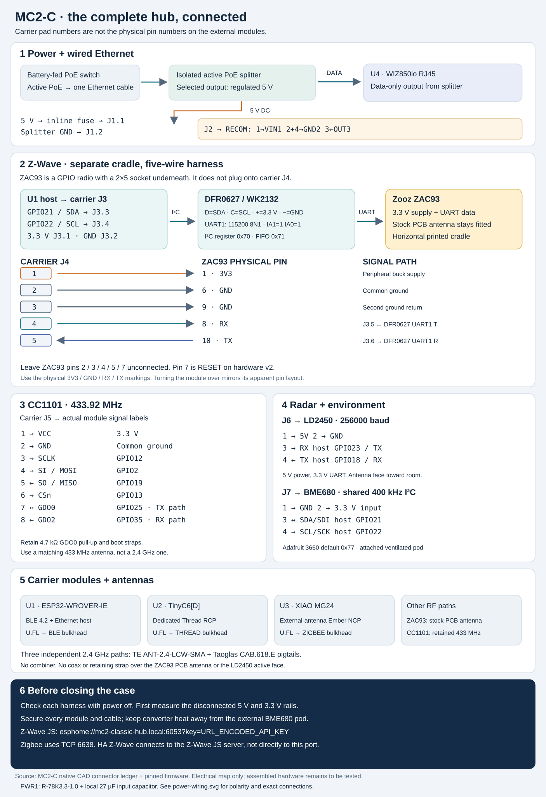
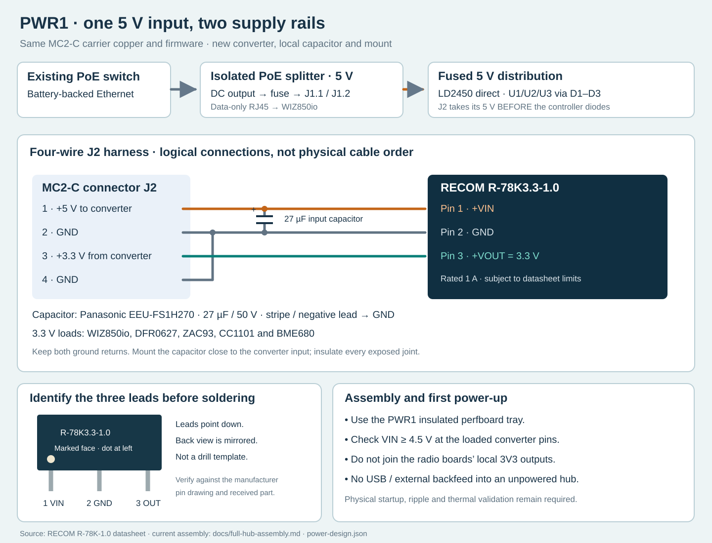
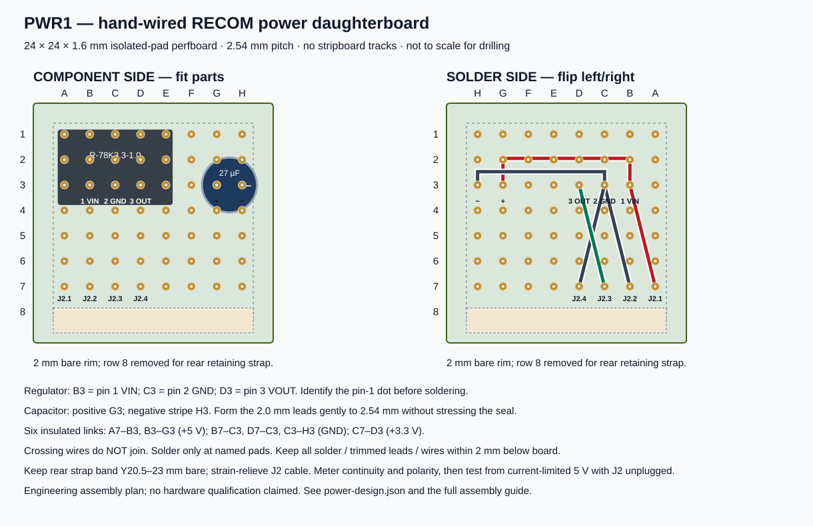

MC2-C full-hub assembly and Z-Wave installation
The Zooz ZAC93 sits in its own printed cradle beside the MC2-C carrier. It connects by a five-wire harness to carrier J4, with serial data passing through DFRobot DFR0627 / WK2132 on carrier J3. It does not plug onto the ESP32, into USB, or directly onto J4: the ZAC93 has a different 2×5 socket.
Use the full-hub enclosure for this assembly. The older 190 × 160 mm carrier-only case does not accommodate the complete hub. The new enclosure provides separate locations and restraints for the carrier, ZAC93, UART bridge, CC1101, radar, BME680, PoE splitter, buck converter and fuse. Its models are a fit-check prototype: compare the received modules and connectors with the documented envelopes before printing or powering the assembly.

Open the wiring image at full size. The image shows electrical relationships, not cable lengths or a mating-side connector view. The mechanical layout shows where parts sit. The native carrier ledger is authoritative for carrier pad numbers.

Fit the three 2.4 GHz pigtails
Use 3 × Taoglas CAB.618.E with 3 × TE/Linx ANT-2.4-LCW-SMA and the FH1-MC2-C-PWR1 print package. Print its connector coupon first: the round 6.8 mm clearance hole passes through the same 3 mm thickness as the case wall. Check the actual bulkhead, washer, nut and mating antenna before printing the main shell. Hold the metal shoulder while tightening; the round hole does not provide an anti-rotation flat, and the coax must not take the tightening torque.
Follow the generated BLE, Thread and Zigbee routes with at least 25 mm service allowance and bends no tighter than 6.8 mm radius. The routing check uses 144 mm available length (150 mm nominal less a project 6 mm shortfall allowance). The manufacturer family drawing does not establish the exact 150 mm SKU's length tolerance, so measure the delivered cables and dry-fit all three with no tension on the miniature sockets. See the selection and evidence.
Install the ZAC93
Use the regional ZAC93 GPIO board, retaining its factory PCB antenna. The manufacturer specifies a nominal 1.1 × 1.1 inch board and 3.3 V supply. Its socket extends below the board; the cradle reserves space for the mating pins and cable exit. Keep the antenna end toward the outer plastic wall, with no metal fastener, foil, converter, cable bundle or retaining strap over the radiating area. The board remains horizontal in its cradle. These are placement choices to be checked by RF testing, not a coverage guarantee. Zooz product manual, Zooz installation and antenna guidance.
With all power disconnected, locate the actual ZAC93 3V3, GND, RX and TX markings. ZAC93 numbering follows positions 1–10 of the compatible Raspberry Pi header. Flipping the board mirrors the apparent arrangement; do not infer pin 1 from a render or from wire colour. The Zooz installation guide and the supplied board's marking must agree.
Connect the carrier J4 harness as follows:
| Carrier J4 pad | ZAC93 physical pin | Function |
|---|---|---|
| 1 | 1 — 3V3 | Regulated peripheral 3.3 V supply |
| 2 | 6 — GND | Ground |
| 3 | 9 — GND | Second ground return |
| 4 | 8 — RX | DFR0627 TX1 → ZAC93 receive input |
| 5 | 10 — TX | ZAC93 transmit output → DFR0627 RX1 |
J4 pad 4 is not ZAC93 pin 4. This is a remapped cable, not a straight-through ribbon. Fit insulated, correctly mating contacts; secure the harness on the printed cable restraint so pulling the cable cannot lift the board. Leave ZAC93 pins 2, 3, 4, 5 and 7 unconnected. In particular, the Raspberry Pi's 5 V header positions are not the supply used here.
On ZAC93 hardware 2, identified by the Version 2.0 marking, physical pin 7
is connected to the radio's reset input. This design deliberately leaves it
open; it does not provide host-controlled Z-Wave hardware reset. Earlier boards
use that position differently. Do not ground it or connect it to a convenient
ESP32 pin. A software restart of the ESP32 is not a ZAC93 power cycle. For a
radio that does not respond to normal serial commands, stop its driver and cycle
the hub's PoE supply, with no USB power connected. A factory reset erases network
state and is a separate operation.
Zooz hardware revision record.
Do not load ESPHome, a generic Silicon Labs image or the project's MG24 firmware onto the ZAC93. It retains Zooz firmware; supported ZAC93 updates are a separate operation through compatible host software.
Fit the UART bridge and verify the complete signal path
DFR0627 is a finished I²C-to-two-UART module using WK2132. The MC2-C host's native UARTs already serve Thread, Zigbee and radar, so Z-Wave uses this bridge. Set IA1 = 1 and IA0 = 1. The pinned driver uses register address 0x70, FIFO address 0x71, and UART1 at 115200, 8 data bits, no parity, 1 stop bit. UART2 is unused. Powering this bridge at 3.3 V also keeps its I²C pull-ups and UART signals at the correct voltage. Do not use a 5 V supply just because the bridge itself supports one.
| Carrier J3 pad | DFR0627 marking | Connection |
|---|---|---|
| 1 | + / VCC | Peripheral 3.3 V |
| 2 | − / GND | Common ground |
| 3 | D / SDA | Host GPIO21 |
| 4 | C / SCL | Host GPIO22 |
| 5 | UART1 T / TX1 | Transmitter; carrier trace continues to J4.4 → ZAC93 pin 8 |
| 6 | UART1 R / RX1 | Receiver; carrier trace comes from J4.5 ← ZAC93 pin 10 |
These six wires go to the module's I²C and UART1 connectors according to their
labels; they are not a claim that DFR0627 has one six-pin connector in this order.
DFR0627's RST and IRQ pads are not wired by MC2-C. Its UART channel reset in
the driver is not the ZAC93 reset. The bridge and BME680 share I²C; the ZAC93's
own pins 3/5 are not connected to I²C.
DFRobot pin labels and module specification,
DFRobot schematic,
pinned bridge driver.
Power and Ethernet
The power chain remains battery → existing PoE switch → one Ethernet cable → isolated active PoE splitter. Only the isolated low-voltage output enters the carrier. This case contains no battery, additional network switch or raw PoE power converter wired directly to the carrier.
- Fit the selected Waveshare POE-SPLITTER-25W-5.5-2.1, the version with the regulated 5 V barrel output, in its restrained bay. Match the actual unit's dimensions and captive leads to the enclosure envelope. Its PoE input receives the switch cable; its data-only RJ45 output plugs into WIZ850io U4.
- Connect splitter +5 V through the rated inline fuse to carrier J1.1; connect splitter ground to J1.2. Verify the barrel polarity and voltage with a meter before connecting the electronics. The project carries a 1.5 A time-delay fuse as the starting specification; validate inrush, temperature derating, wire gauge and contact rating under the completed load. A 25 W splitter rating does not authorize 25 W through this carrier harness.
- Connect J2.1 → RECOM R-78K3.3-1.0 pin 1 (+VIN), J2.2 → pin 2 (GND), J2.3 ← pin 3 (+VOUT, 3.3 V) and J2.4 → the same pin-2 ground node. Add the specified 27 µF input electrolytic capacitor directly between pin 1 (positive) and pin 2 (negative). This is part of the assembly for power connection transients; do not omit it because the nominal input is only 5 V. Identify pins from the manufacturer drawing, not an assumed left-to-right cable order.
- The peripheral 3.3 V rail powers WIZ850io, DFR0627, ZAC93, CC1101 and BME680. The fused 5 V rail powers LD2450 directly; the three controller boards receive it through their individual Schottky isolation diodes D1–D3. Do not join the controller boards' local 3V3 outputs to the peripheral buck output.

RECOM takes its input from fused 5 V before D1–D3, not from a controller's 3.3 V pin or a diode-dropped 5 V output. Its specified input range starts at 4.5 V: measure the voltage at its actual input pins during simultaneous load and startup, including losses in the fuse, connector and cable. Verify the peripheral rail under load before connecting the radios. The 1 A rating is a component limit subject to the datasheet conditions, not a measured hub current. See the current load budget and acceptance criteria.
Fit the SIP3 converter and capacitor on the specified small isolated-pad perfboard, in the new removable PWR1 tray. Insulate solder joints, strain-relieve the harness and keep ventilation around the converter. No screw passes through the converter or capacitor. The old Pololu two-hole mount is not suitable. The RECOM is non-isolated; the selected PoE splitter provides isolation.

Cut a 24 × 24 × 1.6 mm piece with isolated pads on a 2.54 mm grid. Follow the labeled A–H / 1–8 drawing, leaving a 2 mm copper-free rim and removing row-8 pads for the rear retaining strap. Fit RECOM pins 1/2/3 at B3/C3/D3, the capacitor positive/negative at G3/H3, and J2 wires 1/2/3/4 at A7/B7/C7/D7. Gently form the capacitor's 2 mm leads to the 2.54 mm spacing without bending at the seal. The solder-side drawing is mirrored deliberately.
Make the six shown connections with insulated wire, keeping solder, trimmed leads and wire within the 2 mm underside allowance. Crossings are insulated; only named pads join. Check continuity against the connection ledger, then test the detached assembly from a current-limited 5 V source before connecting J2. Use the PWR1 base and tray together; the earlier tray's mounting pattern is different. Mount and print details.
The RECOM output must not be backfed. Program the radio boards loose as directed in Start here; do not attach powered USB or an external supply to the assembled, unpowered hub. The controller supply diodes do not prevent all possible backfeed paths through signal pins.
The MC2-C PCB's J2 is already a generic four-wire supply interface. Its frozen native CAD/BOM retains the earlier D24V22F3 description for export provenance; the current off-board purchase and assembly is RECOM, as specified here and in the shopping list. Copper, pin assignments and firmware are unchanged. This does not qualify the new power assembly physically: measure startup, ripple, temperatures and concurrent operation before deployment. RECOM datasheet and pin drawing.
Other off-carrier modules
CC1101: carrier J5
Retain the 433.92 MHz CC1101 module and its matching antenna. A clone's physical connector order is not standardized; the following are carrier pad numbers and the required module signal names.
| J5 pad | CC1101 signal | Host / rail |
|---|---|---|
| 1 | VCC | Peripheral 3.3 V |
| 2 | GND | Common ground |
| 3 | SCLK | GPIO12, shared SPI clock |
| 4 | SI / MOSI | GPIO2, shared SPI output |
| 5 | SO / MISO | GPIO19, shared SPI input |
| 6 | CSn | GPIO13, dedicated RF chip select |
| 7 | GDO0 | GPIO25, open-drain transmit path with carrier 4.7 kΩ pull-up |
| 8 | GDO2 | GPIO35, receive path |
Mount the module in its separate cradle and use a short, direct harness with ground conductors beside clock/data conductors; avoid a large loop alongside the buck converter. WIZ850io transactions also put 10 MHz clock edges on this shared SPI wiring, even while CC1101 chip select is high. A long loose Dupont bundle is therefore not an approved final harness; inspect signal integrity and RF operation with the actual routed cable. Retain the carrier's GPIO12/GPIO2 pull-downs and chip-select pull-ups. Use the actual RF connector on the retained module and a band-matched antenna; the three 2.4 GHz antennas are not substitutes. Any panel adapter must match both connector gender and standard versus reverse-polarity SMA. Keep the antenna connection accessible without straining the radio PCB.
LD2450: carrier J6
- J6.1 → radar 5V; J6.2 → radar GND.
- J6.3 → radar RX, driven by host GPIO23/TX.
- J6.4 ← radar TX, received by host GPIO18/RX.
The radar uses 5 V power and 3.3 V UART logic, at the configured 256000 baud. Carrier order is not a license to assume the order of the radar's cable colours; read its 5V/GND/RX/TX markings. Fit the radar to its room-facing bracket, with its printed antenna face toward the sensing opening. Route its cable behind it. Keep boards, metal, screw heads and cable loops out of the front field of view. Check detection with the final printed window/material in place; an attractive render does not establish radar performance.
BME680: carrier J7
- J7.1 → GND; J7.2 → 3.3 V input on the selected Adafruit 3660 breakout.
- J7.3 → SDA / SDI, host GPIO21; J7.4 → SCL / SCK, host GPIO22.
Use the breakout's power input (VIN or the STEMMA QT power contact), not its
regulator-output pin. The default address is 0x77; if the actual breakout is
configured for 0x76, change bme680_address in the private firmware build.
The shared bus runs at 400 kHz. Existing breakout pull-ups must go to 3.3 V;
do not add pull-ups or long cable extensions without checking the resulting bus.
Allow roughly 250–300 mm for the routed pod harness as a starting estimate,
then cut to the measured service route. That length is not guaranteed at
400 kHz: verify rise times, noise and reliable communication while the other
radios are active. Route ground with SDA/SCL and separate this cable from the
buck and high-current leads.
Keep this module in the ventilated pod on the enclosure's stand-off arms, outside
the warm main cavity and separated from the buck converter, PoE splitter and
controller heat. Do not cover the sensor
opening with foam, glue or a retaining strap. Compare temperature with an
independent room sensor after thermal equilibrium; raw gas resistance is not a
calibrated CO₂/VOC concentration.
Adafruit BME680 power and I²C pinout.
Mounting and cable order
Follow the printable parts and fastener schedule. All electronic modules need a restraint; connector friction alone is not a mount.
- Fit the case fasteners, carrier standoffs and peripheral cradles with the base empty. Print and check the small fit coupons and new power tray before committing to a full case.
- Install the PoE splitter and fuse in the power bay, then the RECOM buck and its input capacitor on the perfboard support. Restrain their low-voltage leads before fitting the carrier.
- Fit the MC2-C carrier to its four mounting positions. The finished U1–U4 modules are supported by the carrier as designed; check solder-tail clearance.
- Fit the DFR0627 and CC1101 to their trays. Place the ZAC93 in its own cradle with the antenna area clear and connect the remapped J4 harness from below. Support the board while mating the socket, then secure only its non-antenna area. Do not drill new holes in a radio PCB.
- Fit LD2450 to the room-facing bracket and BME680 to the attached ventilated pod. Keep removable-panel leads long enough to service, but restrained so they cannot cross the radar face or be pinched at the lid.
- Fit the three independent 2.4 GHz bulkheads and connect U1/BLE, U2/Thread and U3/Zigbee with their specified pigtails. Route and restrain these separately from the power harness. Preserve the installed CC1101 antenna arrangement and the ZAC93 stock antenna. No shared antenna splitter is used.
- Check with the cover resting in place that no part, plug, antenna connector, screw or wire is compressed. A modelled envelope is not a substitute for this dry fit. Keep the fasteners and cables needed for future fuse/radio access reachable without desoldering the carrier.
First power and Home Assistant
Program the three loose controllers with their MC2-C host, TinyC6 and external-antenna MG24 images following the firmware guide before assembling; use the exact external-antenna MG24 image. The ZAC93 arrives with its own radio firmware. Remove USB power before attaching the PoE-fed assembly. Attach the correct antennas before transmitting.
With power off, continuity-check every cable against the ledger, including J4.4→ZAC93 pin 8 and J4.5→ZAC93 pin 10. Check that 5 V and 3.3 V are not shorted to ground or to each other. Test the disconnected splitter/buck rails before connecting expensive modules; then verify voltages again under load and at the ZAC93 itself. Confirm I²C devices, bridge health, Ethernet link and radio startup with the lid open before completing the case.
Add mc2-classic-hub to the ESPHome integration. In Z-Wave JS / Z-Wave JS UI,
use the native ESPHome serial transport:
esphome://mc2-classic-hub.local:6053?key=URL_ENCODED_API_KEY
Use the matching private encrypted API key, URL-encoded if it contains reserved characters. Do not publish that URL with a real key. The HA Z-Wave integration connects to the Z-Wave JS server's WebSocket address, not directly to port 6053. Port 6638 on this hub belongs to Zigbee, not Z-Wave. Z-Wave JS native ESPHome connection.
For a new ZAC93, verify its region and start its new network normally. If moving a previously used ZAC93, first back up its NVM and network keys, stop the previous driver, and retain the same radio/network state. Do not factory-reset it or re-include every device merely to move the UART host. Only one Z-Wave JS driver should own this radio. This documentation does not itself switch a running Home Assistant installation.
Finally test a real Z-Wave event alongside Thread, Zigbee, BLE, RF and radar. Repeat with the lid closed and at the final location, record temperatures and supply drop, and perform the RF and stability acceptance. Mechanical clearance, firmware compilation and electrical continuity are separate checks; none proves the completed hub has passed an operating test.